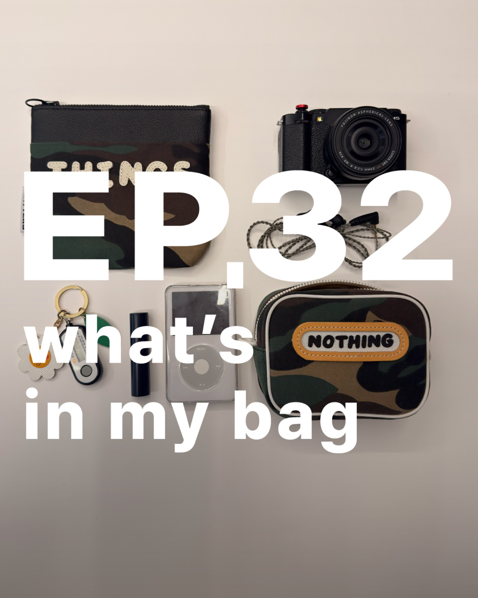

결혼식 답례품 쿠키 가이드
웨딩쿠키, 결혼식답례품쿠키세트, 웨딩답례품추천처럼 정갈한 웨딩 답례 흐름을 먼저 좁히는 가이드예요.
- 브라우니쿠키와 커스텀 브라우니 흐름 비교
- 문구형 답례와 기본형 답례를 나눠서 안내
- 웨딩답례품쿠키 검색 의도에 맞춘 선택 기준 정리
메인은 전체 브랜드와 제품을 한 번에 보는 허브로 두고, 여기서는 결혼식 답례품 쿠키, 기업행사 쿠키, 선생님 간식, 퇴사답례품, 디저트선물세트, 행운쿠키처럼 검색 목적이 분명한 흐름만 따로 빠르게 정리했어요.

검색 키워드가 제품명보다 먼저 떠오르는 경우가 많아서, 자주 찾는 상황부터 별도 허브로 바로 이어지게 구성했어요.
웨딩쿠키, 결혼식답례품쿠키세트, 웨딩답례품추천처럼 정갈한 웨딩 답례 흐름을 먼저 좁히는 가이드예요.
기업행사, 회사답례품쿠키, 단체 행사 간식처럼 회사 단위의 목적이 분명한 주문을 위한 가이드예요.
유치원선생님간식, 어린이집간식선물, 감사선물처럼 부담 없이 건네는 간식 선물을 위한 가이드예요.
퇴사답례품, 육아휴직답례품, 승진답례품, 회사퇴사선물처럼 짧은 문구 포인트가 필요한 상황을 위한 가이드예요.
구움과자선물, 쿠키선물세트추천, 백화점쿠키선물세트처럼 선물감이 중요한 흐름을 위한 가이드예요.
행운쿠키, 응원쿠키, 졸업, 새해, 감사 선물처럼 작은 마음을 전하는 흐름을 위한 가이드예요.
가이드 허브는 키워드를 그대로 나열하기보다, 실제 문의 의도에 맞는 묶음으로 먼저 좁히는 데 초점을 맞췄어요.
결혼식답례품쿠키, 웨딩답례품쿠키, 회사답례품쿠키, 기업행사 같은 검색 흐름은 정갈한 전달감과 수량 대응이 중요해요.
유치원선생님간식, 어린이집간식선물, 감사선물, 가벼운선물 같은 검색은 너무 무겁지 않으면서도 기분 좋은 인상이 중요해요.
구움과자선물, 쿠키선물세트추천, 고급쿠키세트, 디저트선물세트 같은 검색은 패키지와 인상이 중요한 경우가 많아요.
검색으로 먼저 들어왔을 때 가장 많이 궁금해하는 질문부터 짧게 정리했어요.